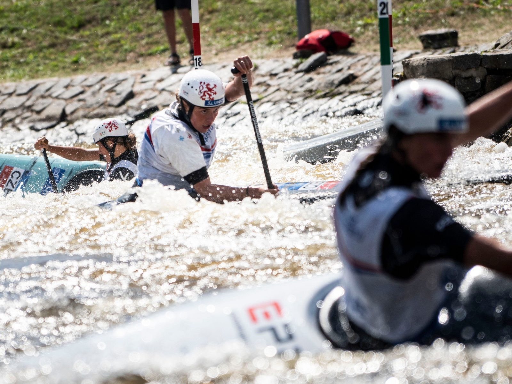
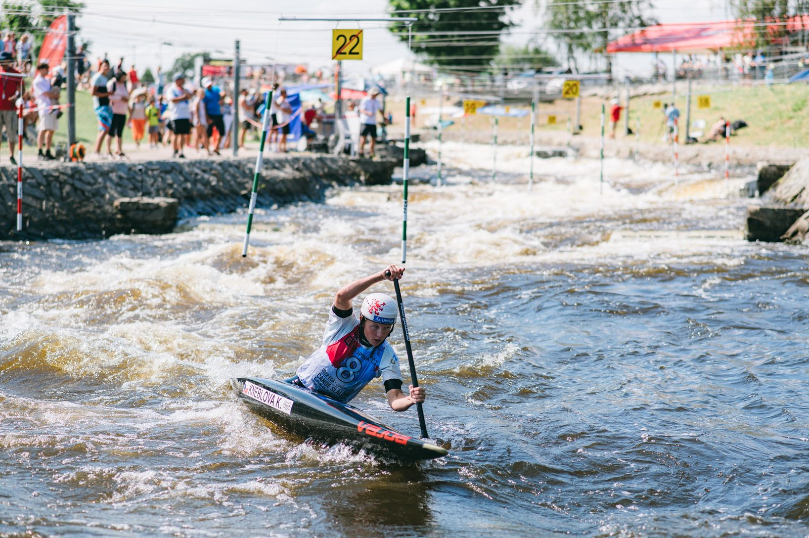

Druhý den na evropském šampionátu juniorů a závodníků do 23 let ve vodním slalomu přinesl českému týmu další medailovou radost. Pro nejcennější kov v závodě hlídek si dojely kanoistky Gabriela Satková, Tereza Kneblová a Eva Říhová, stříbro vybojovali junioři Lukáš Kratochvíl, Michal Urban a Tomáš Větrovský a tutéž medaili slaví i trio juniorek Klára Kneblová, Olga Samková, Adriana Morenová. Dopolední kvalifikací v kategorii C1 prošli všichni čeští závodníci bez potíží, domácí výprava tak bude mít ve víkendovém semifinále stoprocentní složení.
Úřadující světové šampionky do 23 let v hlídkách ve složení Satková, Kneblová a Říhová si před domácím publikem dojely i pro evropský titul. Byť se nevyvarovaly trestným dotekům, s náročnou tratí si poradily nejlépe. „Trať je opravdu těžká, hodně se tu mění voda. Dokud nejste v bráně, tak není nic jisté. Je těžké si ohlídat šťouchy,“ okomentovala Kneblová. „Nebylo to popravdě úplně ideální ve srovnání s mistrovstvím světa v Ivree, kde jsme jely parádně a čistě. Dnes tam byly momenty nejistoty, takže jsme rády, že to nakonec dopadlo takto dobře,“ dodala Říhová.


Dvě stříbra přidali junioři a juniorky. Na netradičně sdíleném druhém místě dojela posádka Lukáš Kratochvíl, Michal Urban a Tomáš Větrovský, která měla v cíli totožný čas jako Španělé. „Máme neskutečnou radost, konečně jsme si spravili chuť,“ radoval se Urban. „Trochu mě mrzí ty doteky, ale celkově určitě velká spokojenost. A aby dvě hlídky dojely ve stejném čase, to je opravdu něco neobvyklého,“ dodal Větrovský.
Juniorky dnes zabodovaly ve složení Klára Kneblová, Olga Samková a Adriana Morenová. „Za sebe musím říct, že jsem udělala jednu velkou botu, která nás možná mohla stát zlato, ale bohužel už s tím nic nenaděláme. Na druhou stranu, stříbro je určitě super,“ zhodnotila Samková. „Zvládly jsme to skvěle. I když tam chybičky byly, ustály jsme to a stříbrná medaile je úžasná,“uzavřela Kneblová.
Bez medaile skončili kanoisté do 23 let. Trojice Vojtěch Heger, Martin Kratochvíl a Adam Král obsadila pátou příčku.
Dopoledne se představili kanoisti a kanoistky v individuálních závodech. Čeští závodníci nezaváhali a do semifinále postoupili hned první jízdou – kategorii kanoistek do 23 let ovládla Satková, T. Kneblová skončila osmá a Říhová jedenáctá. V juniorkách zvítězila K. Kneblová, Samková brala šestou příčku a Morenová patnáctou. Nejlepším českým kanoistou do 23 let byl šestý M. Kratochvíl, Král dojel sedmý a Heger desátý. V kategorii juniorů skončil šestý Urban, L. Kratochvíl dojel dvanáctý a Větrovský čtrnáctý.


Zítřejší program nabídne semifinále a finále kajakářek a kajakářů v obou věkových kategoriích, odpoledne se pojede time trial extrémního slalomu.